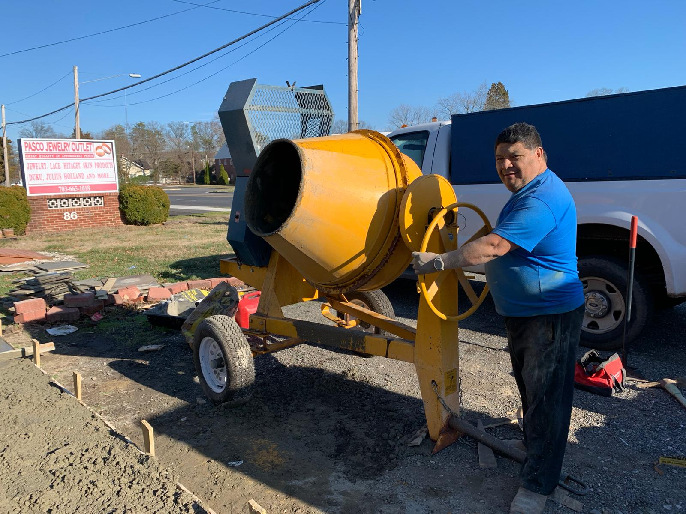
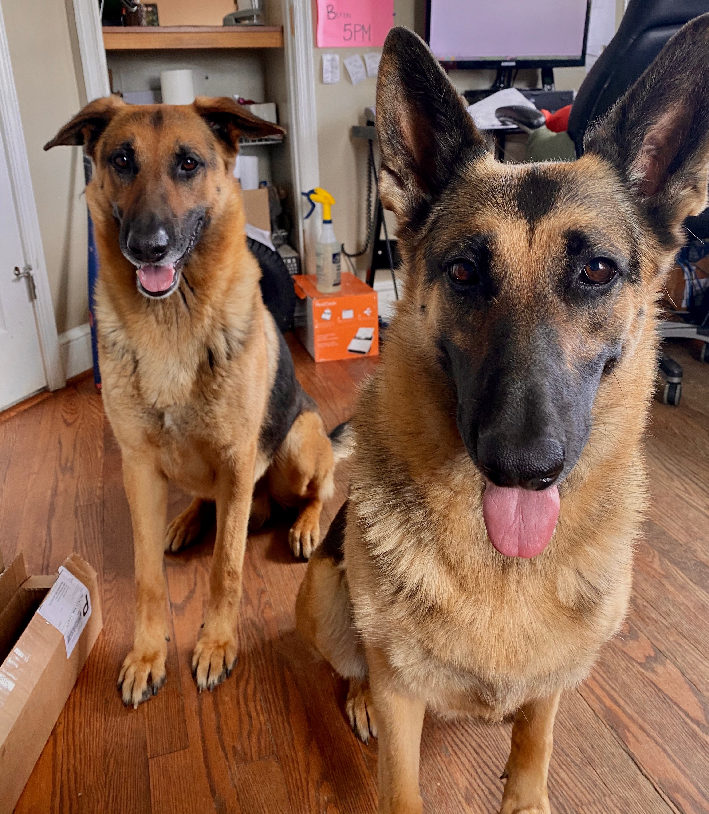

About Us
Get to know a little bit about us.
|  |
AP Lawn & Landscaping was founded in 200X by Armando "AP" Pisfil. Growing up in rural Peru, he was always helping his father with plants and landscaping work. When he moved to the United States he set out to create his own landscaping business. AP is a great man that prides himself in the quality of his work.
|
|
Daisy and Killer are the two German Shepherd dogs that the AP family owns. Although they are not fond of strangers they live a very easy going life. They enjoy sleeping and playing with their dog toys. They both like to chase after amy squirrels or birds that should land in their vicinity. They absolutely love to spend time with their human family.
|
 |